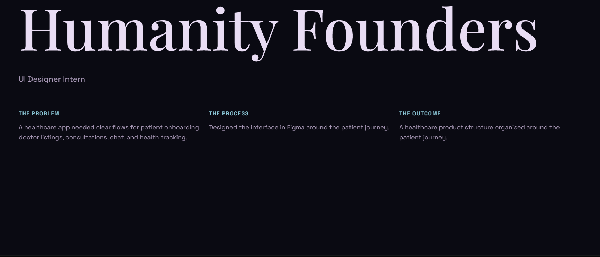

UI DESIGNER INTERN · HUMANITY FOUNDERS
Healthcare app.
A healthcare product organised around the patient journey, covering patient onboarding, doctor listings, consultations, chat, and health tracking.
Screen preview

The brief
Make the core healthcare tasks easier to understand and move through on mobile.
What I made
Onboarding
Clear entry points for patients.
Clear entry points for patients.
Doctor listings
A structured way to find care.
A structured way to find care.
Consultations
Connected consultation, chat, and tracking flows.
Connected consultation, chat, and tracking flows.
Outcome
A clearer information structure for the patient journey. The exact screen count is not listed because it has not been verified from the source Figma file.